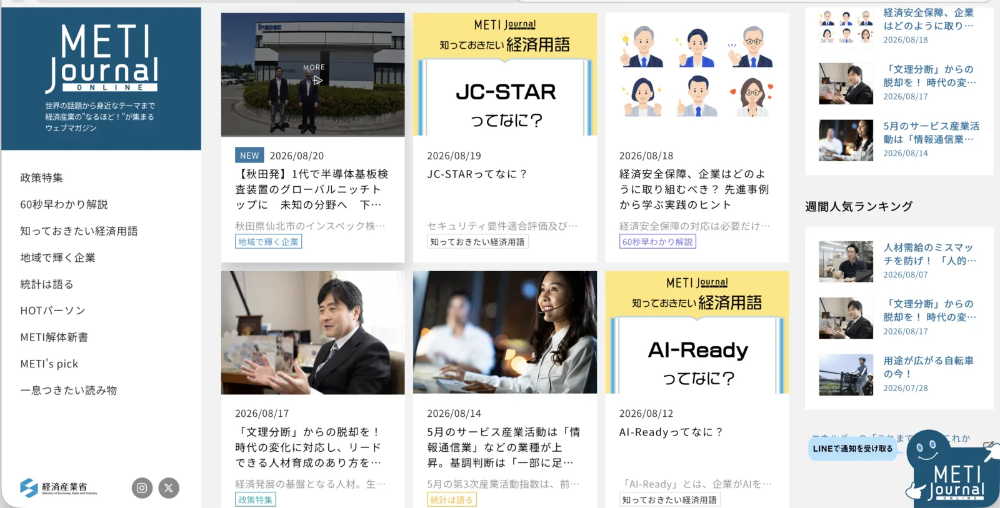

讀書筆記 ·
Chris 筆記｜導入AI之前，先做這三步：把經濟產業省的「AI-Ready」落實到公司內部數據
原文：X · @keitaro_aigc（けいたろう@Manusフェロー） ·
我的想法
METI Journal ONLINE，不是一般的新聞網站，也不是單純的「經濟產業省公告欄」，而是日本經濟產業省（METI）自己經營的官方 Web Magazine／政策傳播媒體。
METI Journal 的前身是經濟產業省的廣報誌，2008 年重新改版成「METI Journal」。把經濟產業省的政策，重新包裝成一般人願意閱讀的新聞、專題、人物故事與知識內容。幾天前，它在網站上介紹了 AI-Ready 的概念，因為很多人都對這名詞有誤解。
AI-Ready 其實不在你們公司或你個人是否已經開始使用某個大模型工具，而是你們所在的企業及個人環境，是否已將原本雜亂無章的文件及資料，轉變成 AI 方便讀取的結構化模式。我最近每天在做的就是這些工作，把大量的照片及PDF或紙本內容，轉化成 LLM wiki 的模式，然後再強迫自己 publish 對外公開，這是一個很好逼著自己完成工作的壓力。

摘要 / Summary
這篇文章拆解日本經濟產業省METI Journal在2026年8月12日提出的「AI-Ready」定義：AI-Ready指的不是簽了哪套AI產品，而是「把數據整理、結構化，使其成為可活用的狀態」。作者強調企業常把AI表現不佳的原因歸咎於模型本身，卻忽略了真正卡關的是內部數據——即使欄位排得整整齊齊，只要意義和關聯不清楚、或同一個詞在不同部門有不同解釋，就稱不上是可活用的高品質數據。
文章把「整理」與「結構化」拆成兩件不同的事：整理是找出重複、釐清資料所在位置與負責人；結構化則是替數據賦予意義與關聯性，讓AI容易理解，而且這不是一次性工程，每次現場資料更新都需要重新確認意義是否走樣。實務提案上，作者建議不要一口氣盤點全公司，而是從判斷頻率高、出錯影響大、更新頻繁的單一業務切入，用【數據名稱】【業務上的意義】【建立者・更新者】【更新時間點】【相關數據】【AI使用時的確認者】這類最小台帳，逐項記錄下來。
最後作者把「換模型能解決的問題」和「不整理數據就會一直存在的問題」明確切開，並提出AI-Ready最小檢視清單：能否一句話說明用途、知不知道更新者與更新時間點、能否循線找到關聯數據、是否已決定AI輸出的確認者。作者也坦承persona沒有提供具體失敗經驗與實測時間數據，因此文中相關部分刻意不編造，是這篇文章明講的限制。
重點 / Keypoint
「日本經濟產業省的METI Journal把AI-Ready說明為「把數據整理、結構化，變成可以活用的狀態」。作為AI競爭的關鍵，這裡指出的不只是模型，而是數據。」
「整理，可以從找出不必要的重複、釐清資料所在位置與負責人開始著手。結構化，則是為數據賦予意義和關聯性，讓AI容易理解的作業。」
「在選擇要用哪個AI之前，先問問自己：公司的數據能不能說明清楚？把這一點整理好，AI導入的討論就會從「產品比較」轉變成「工作設計」。」
分享用短連結：https://os.housearch.net/n/8